Researching the Serve¶
By Greg Ryan
Movement scientists who have studied tennis over the last two decades have made the serve a focus for biomechanical analysis. There are two reasons why more analysis has been done of the serve compared to the other strokes.
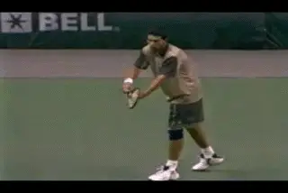
Movement science attempts to quantify the elements in elite serving.
First, the serve is probably the most important stroke in tennis. It begins every point and is the only stroke in which the player has complete control.
The second reason is that the serve is much easier to film and therefore to analyze. This is because the players serve from set positions on the court. filming for three-dimensional analysis is generally done with fixed cameras that can't pan or zoom to follow the players. The wide range of court movement in groundstrokes and net play makes the other strokes far more difficult to study.
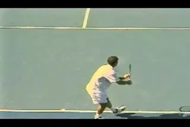
Pete Sampras demonstrates the 5 phases of elite serving: toss, backswing, loading, acceleration, and followthrough.
The work of movement scientists has attempted to identify and to quantify the central elements in the motions of elite servers. The results to date show that the motions of elite servers are extremely complex--an opinion certainly shared by most working coaches. The performer must coordinate the motion of multiple body segments very precisely to produce a high racquet velocity and an optimal swing path as well orient the racket head at ball impact.
In this article we'll take a look at the scientific literature to date, reviewing and summarizing what is currently known. To do this we will break the serve down into a series of 5 major phases, each of which has been the subject of a greater or lesser number of quantitative studies.
We'll discuss what is currently best understood and least understood about the serve. This will lay the ground work for introducing a new body of three dimensional work that was undertaken as a collaboration between the human movement laboratory at San Francisco State, Dr. Robert Schliehauf, myself, and Advanced Tennis Research. (www.advancedtennis.com). In future articles we'll be presenting some of these results, not only regarding the serve, but other strokes as well.
The 5 Phases of the Serve are:
The Tossing Phase
The Backswing Phase
The Loading Phase
The Acceleration Phase
The Followthrough Phase
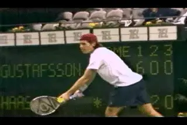
The Tossing Phase ends with the ball leaving the hand. Observation shows great variability in starting position, shoulder alignment and weight distribution.
The Tossing Phase
The initial phase of the serve begins with the movement of the arms and ends with the ball leaving the hand. This is the ball toss phase. The goal of this phase is to toss the ball consistently to a desired location that is optimal for ball contact and the timing of the stroke.
This aspect of the serve has not been well researched, with a limited number of investigators identifying the critical aspects. Studies to date show, however, that there is a high degree of variability within the tosses of elite servers. The positioning of the body, the height of the toss, as well as the left to right position of the toss all seem to vary substantially from elite performer to elite performer.
Some studies have found elite subjects begin with their shoulders in alignment with the direction of the serve and with the majority of their weight on the front foot. But qualitative observation of players at any pro events shows that this is far from the only option. Players have a wide range of starting positions with different shoulder alignments, and with the weight distributed differently over either or both feet.
Toss Height
The height of the ball toss depends on the timing or temporal aspect of the performers' backswing. A performer with a slow backswing will need to have a higher toss than a player with a faster and/or abbreviated backswing.
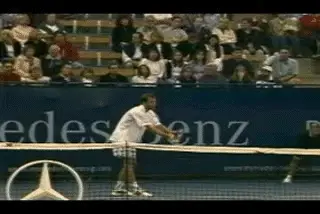
Even players with lower tosses hit the ball after it has dropped substantially from the apex.
Another factor that influences this timing is the amount of ball drop from maximum height. Studies have shown that virtually all elite performers studied contact the ball after it has begun to drop from its apex. This is true even for players with lower tosses, such as Greg Rusedski or Goran Ivanisevic.
An increase in drop height increases the velocity of the ball at impact. This increases the margin of error in striking the ball on the racquet's sweet spot. It also increases the amount of topspin that will be imparted on the ball with all other aspects being equal.
Only one study has identified the characteristics of the actual tossing arm motion of elite players. The professional players sampled all tossed the ball with their arm completely straight (elbow extended). This identifies the shoulder joint as the prime mover of the arm, while the elbow is in a fixed position.
The actual point of the release of the ball was slightly lower than the standing height of the performer. This seems to be a control strategy that maximizes accuracy and consistency, since very little force is required to toss the ball to the desired location.
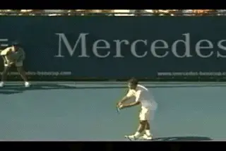
In reality the toss moves substantially from the player's right to left. The straight up and straight down toss is a coaching myth.
Path of the Toss
Another factor is the path of the ball after it leaves the tossing hand. On the first serve, all participants tossed the ball from the right to the left.
In fact, the research shows that the tosses of professional players could move up to three feet to the left, after the release. In addition, top players also tossed the ball in front of their bodies, again up to three feet forward of the point at which the toss was released.
This finding contradicts a coaching myth that has promoted a straight up and down toss or a toss that is to the right of the body of a right handed server. A case study showed that the contact point in selected professional player was about six inches to the LEFT of the player's left toe.
But again qualitative observation of elite servers indicates that the precise amount of movement from right to left varies significantly and may also be related to the amount and type of spin produced.
The Backswing Phase
The next phase of the serve is the backswing phase. This phase overlaps with the tossing phase, with the player positioning the racquet at the same time he is executing the toss.
The Backswing Phase ends when the racquet tip reaches its maximum vertical distance from the ground or the court.
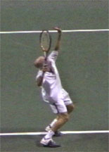
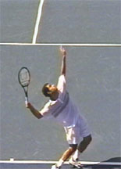
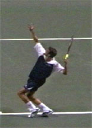
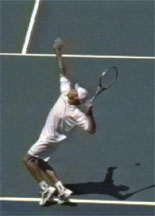
Research shows the Checkmark position is optimal for the drive to the ball.
The goal of this phase is to position the body segments and racquet in an optimal position for the drive to the ball. Researchers have identified the end of this phase as the so-called "checkmark" position, where the tossing arm, shoulder segment and upper arm are in line at approximately 45 degrees with the dominant elbow flexed. Both qualitative and quantitative studies have shown that elite technique varies minimally at this position.
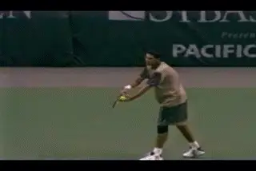
The backswing can be full, mildly abbreviated, or extremely abbreviated like Andy Roddick.
Studies have identified two backswing techniques, both of which lead to the "checkmark" position. In the full backswing, the player first drops the racquet towards the ground by letting the elbow joint extend, a motion which is gravity assisted. The shoulder then moves away from the body (technically called "abduction") with the elbow extended. The movement of the racquet is in a circular path upward and away from the ground.
The elbow then flexes approximately 90 degrees at the same time the tossing arm reaches its maximal position creating the "checkmark". This backswing pattern, considered to be classic or old school by most coaches, is characteristic of players such as John McEnroe or Mark Philippoussis.
The other backswing technique that has been identified is the abbreviated backswing. In the abbreviated backswing, the player keeps the elbow flexed from the starting position to the end of the backswing.
The movement is generated from the shoulder joint, with two key movements. The first is "abduction" in which the shoulder moves away from the body. The second is external rotation. This is the rotation of the upper arm backwards in the shoulder joint until the checkmark position is achieved.
Players with versions of the abbreviated backswing include Pete Sampras, who has a mildly abbreviated backswing, and Andy Roddick, who is known for the most extreme version of this variation.
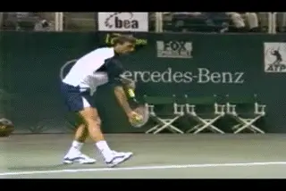
During the backswing the center of gravity moves forward as the arms rise.
Lower Body
The lower body during the backswing phase can also vary considerably from performer to performer. These differences can include the position of the legs at the beginning of the serve, and the distribution and movement of the weight between the legs.
The common characteristic in elite servers is that the center of gravity moves forward as the arms rise. As the center of gravity shifts forward both knees flex. But the flex varies in magnitude between performers.
Two techniques have been identified in positioning the feet, the "foot-back" and "foot-up" methods. In the foot-back technique the dominant or rear foot remains stationary as the center of gravity shifts forward and the knees flex.
The foot-up method is characterized by the back foot sliding forward usually until it is next to the front foot during the backswing. One study conducted on college level players focused on comparing these techniques and concluded that the foot-up method resulted in a higher contact position while the foot-back technique increased contact position in the forward direction and increased the amount the body traveled into the court.
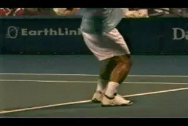
Is there a difference in contact height or position based on the positioning of the feet?
Hips and Shoulders
The hip and shoulder segments have been shown to rotate to the right (for a right handed player) during the backswing phase. The movements in this phase result in the body being rotated to the right of the target with the tossing elbow fully extended and the shoulder abducted (which moves the arm away from the body) so that the hand is above the level of the head.
The dominant elbow is flexed approximately 90 degrees with the shoulder abducted approximately 90 degrees as well. The hitting arm is also externally rotated (or rotated backward in the shoulder joint) about 90 degrees.
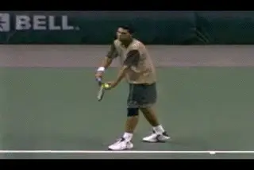
As hips rotate away from the target, shoulder abduction moves the arm way from the body. The dominant shoulder is lower with the knees flexed.
The dominant shoulder is at a lower vertical position that the non-dominant shoulder with both of the knees flexed. The body is now in an optimal position to drive to the ball as the body moves into the loading phase of the serve.
The Loading Phase
The Loading Phase of the serve begins as the legs extend to propel the body toward the ball. The Loading Phase ends as the racquet drops behind the back to its lowest point.
The goal of this phase is to load or place the muscles of the upper-extremity on stretch and increase the range of motion of the path that the racquet makes to the ball. Placing a muscle on stretch maximizes its capacity to produce force. An increase in range of motion of the shoulder and elbow gives the player more space to accelerate the racket.
Ground Reaction Force
As the knees extend they produce what is called a "ground reaction force." The ground reaction force is generated when the player "pushes" down against the ground with his feet through the knee bend. The ground in turn "pushes" back, generating the force that propels the player upward and forward into the air toward the ball.
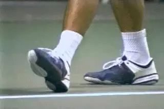
When a player pushes against the court with his feet, he generates ground reaction forces that propel him upward and forward to the ball.
There are actually 3 components to the ground reaction force: upwards (or vertical), forward (or horizontal), and sideways (or lateral).
The vertical component is the highest, with a force equal to about twice the player's body weight. The horizontal component is also significant, generating a force that is two thirds to three fourths of the body weight, while the lateral component is minimal.
The ground reaction forces starts the transfer of energy upward through what is called the kinetic chain. In this way the force is "summed" through the body segments so that a high racket head velocity can occur at ball contact.
The extension of the knees propels the body toward the ball. This in turn aids in the loading of the shoulder, and also increases range of motion of the shoulder joint.
Since the body is moving upward or vertically off the court, there is an opposite force being produced at the shoulder joint due to the influence of gravity on the weight of the arm and racquet complex. This is what is called an "eccentric force" which increases the external rotation of the shoulder and flexion, or bend at the elbow.
At this point in the serve the shoulder joint reaches maximum external rotation, typically having rotated backwards about 170 degrees. The elbow joint also reaches its maximum flexion at this time, flexed or bent at about 115 degrees.
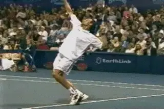
As the body leaves the court, gravity produces an opposite, eccentric force on the arm and racket increasing the external rotation of the shoulder and driving the racket down.
This dynamic movement, created by the leg drive and by gravity, is what produces the loading of the shoulder joint, and at the same time, increases the length of the racquet drop. At this point, the upper-body is in an ideal position to produce the maximum amount of force and accelerate the racquet.
The Acceleration Phase
The acceleration phase of the serve begins with the racquet moving vertically toward the ball and ends when the racquet strings contact the ball. The goal of this phase is to accelerate the racquet so that maximum racket head velocity occurs at ball impact, and to create the ideal racket head path and orientation for the intended ball location.
In this phase of the serve, the action of the kinetic chain resembles other physical motions such as, throwing, kicking, and striking. Movement scientists have identified a general principle to explain force production in these movements. This is called "proximal to distal sequencing."
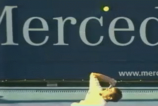
In the Acceleration Phase the force generated by larger body segments Is transferred into the arm and hand.
Basically it means that for each segmental movement the force generated is passed to next segment which is referred to as a kinetic chain. In this way the forces generated earlier in the motion are eventually transferred into the racquet head and finally to the ball.
Research has demonstrated that this movement is initiated by the heavier, slower central body segments. Then, as energy increases, the motion proceeds outward to the smaller, lighter and faster segments.
This transfer of energy has been identified in the tennis serve by numerous researchers. Their work has determined that the sequence of the maximum velocities of the body parts are achieved in this order: the hip, the shoulder, the elbow, the wrist and finally the racquet tip.
Put another way, the hips accelerate and reach their maximum speed first. The force is transferred to the shoulder, which reaches it's maximum speed next. This is followed by the force transfer to the elbow, the wrist and the racket tip. This sequencing of the kinetic chain begins at the start of the loading phase and ends a split second prior to ball contact.
The Movement of the Arm
Recent studies have also focused on how the movement of the upper extremity, or arm, contributed to racquet head velocity. The movement not only happens in a split second, it is very complex. There are actually 7 distinct components in the arm movement toward the ball, which occur in a specific following sequence. These components have technical names that we will explain below.
The 7 components of arm movement:
horizontal flexion
abduction of the shoulder
elbow extension
wrist ulnar deviation
wrist flexion
shoulder internal rotation
forearm pronation
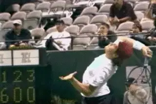
Watch the upper arm rotate forward, generating over half of the total racket head speed.
Researchers have been able to determine the relative contribution of some of these segments. Studies show that the greatest contributor is the internal rotation of the upper arm. This is the forward rotation of the upper arm in the shoulder joint, as the racket starts upward to the ball. Internal rotation is responsible for over half of total racket head speed at 54%.
The next largest contributor is wrist flexion, or the forward motion of the wrist toward the forearm. This is the motion of the wrist from its laid back position at the start of the motion to the ball until the contact. Wrist flexion was found to contribute 30% of total racket head speed.
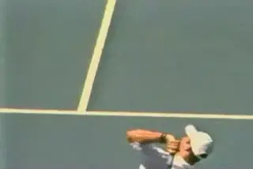
Almost one third of the racket head speed comes from the movement of the wrist.
The third largest contributor to racquet head speed is horizontal abduction of the shoulder joint at 13%. This is a foreword movement of the upper arm at the beginning of the acceleration phase.
Taking a cue from this research, a few exercise physiologists have used weight training to strengthen the muscles in the shoulder that produce internal rotation. Their studies show that this increases serve velocity. It has also been hypothesized that the leg drive is of great importance in producing this effect, because it increases the stretching of the internal rotator muscles.
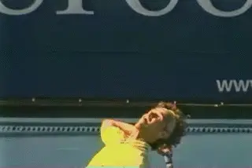
The forward movement of upper arm, or horizontal abduction, is the third largest source of racket head speed at about 13%.
More on the Arm
Despite these results, there has also been controversy in the literature in describing the movement patterns of the arm or the upper-extremity in the acceleration phase. The complexities of the stroke and performer variability make it difficult to simplify or to create a generic pattern of segmental movements.
This is in part because the arm action has overlapping movements, and because the total pattern has never been analyzed for a large number of professional players.
This very complex sequence works in concert with the "differential relaxation" of the muscles. Differential relaxation refers to the performer's ability to control the relaxation and contraction of a muscle group during a movement.
During the loading phase the leg drive to the ball works in concert with relaxation of the shoulder joint to increase external rotation, or the rotation of the upper arm backwards in the shoulder socket.
This increase in external rotation places the internal rotators of the shoulders on stretch which increases the force production of that muscle group. To maximize racket head speed each segmental movement should be paired with the relaxation of the next distal muscle group. This maximizes the loading as that muscle group is placed on stretch.
Each of the movements in the sequence prior to ball impact has this same action and reaction combination. This is what maximizes force in the kinetic chain and therefore ball velocity.
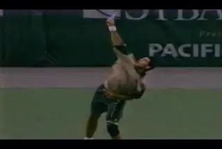
The followthrough is the final, deceleration phase in the movement.
The Followthrough Phase
The follow through phase of the serve is from ball contact to the end of the stroke. The primary goals during this phase is to decelerate the racquet slowly so that no injury is done to the musculature or joints, and to prepare for the next stroke.
Research is very limited in this phase of the serve and has mainly been conducted in a qualitative manner. The main finding is that the racquet slowly decelerates moving from left to right across the body and toward the ground.
Most of the players that have been analyzed have landed on their non-dominant foot, but there are a few exceptions. The stroke generally ends with the performer's hips and shoulders parallel to the baseline in preparation for the next shot.
What's Next
The future of quantitative research lies in doing more studies of high level players both non-invasively and in live competition. A larger data base of studies on the serve will lead to an understanding of questions such as what variations in the motion creat different spins and ball locations. The quantitative study of all the strokes, not only the serve, offer an exciting new avenue for developing information that can help players and coaches not only at the elite, but at all levels.
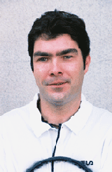
Greg Ryan has been a player, coach, and professional student of the game for twenty years. He first learned to play tennis by studying video of great John McEnroe. Greg is completing his masters in kinesiology at San Francisco State University, working under noted biomechanist, Dr. Robert Schleihauf. His thesis describes the groundbreaking results of a non-invasive quantitative analysis of elite servers. Greg is an associate editor for Tennisplayer.net and a researcher and data analyst for Advanced Tennis Research in San Francisco, California.